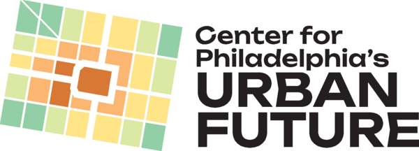

Philadelphia · Urbanism · Civic Technology
CPUF is a 501(c)(3) nonprofit fiscal sponsor and project incubator that helps civic and technology initiatives scale — at the intersection of urbanism, civic technology, and local government access.
Get in touchOur mission is to create a more equitable Philadelphia for all residents — and to educate the public on transportation, land use, and public space issues.
CPUF exists to provide strategic capacity and fiscal sponsorship to a wide range of initiatives. We originate and incubate civic and technology projects that provide spillover benefits for the whole network of urbanist and civic tech organizations across the city.
Good ideas, projects, and experiments often need lightweight admin support to unlock fundraising potential — one reason we exist is to handle the admin headaches that can present roadblocks to good ideas achieving liftoff.
Watch this space for original projects, news, and updates.
Fiscal Sponsorship
CPUF provides fiscal sponsorship to initiatives that align with our mission of building a more connected, equitable Philadelphia through technology and civic engagement.
Volunteer-driven civic technology and open data projects for Philadelphia residents.
Fiscal SponsorPhiladelphia's open data portal — making city data accessible to everyone.
Fiscal SponsorVolunteer campaign to keep the Academy of Natural Sciences' public museum open on the Benjamin Franklin Parkway.
Fiscal SponsorGet Involved
If you have a project that might benefit from fiscal sponsorship or strategic support, we'd love to hear from you.
info@cpuf.org